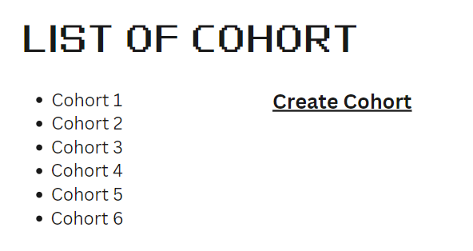
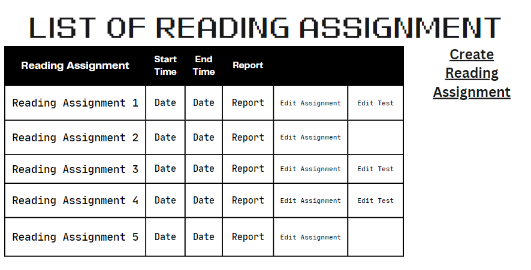
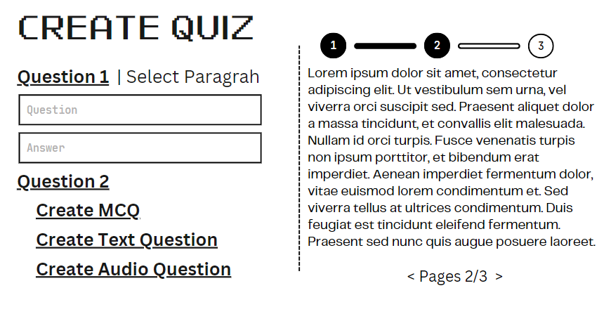
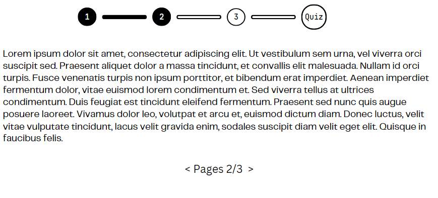

Version 1.0 approved
Prepared by Alian Ahmed Ferdous 2012869042
CSE327 Section 2
28/10/2022
Contents
This document goes an in-depth description of the functionality, operations, and constraints under which, this software, Grasp, will perform, the platform on which will operate, and its interface and interaction with its different users, in order to fulfil its intended purpose. This document is for the developers of this software.
The IEEE srs standard was followed.
This document’s primary intended audience is the software developers. The different users (Teachers and students) can read the introduction and system features for better understanding.
Grasp is a reading evaluation software that aids teachers through active monitoring of students while they read the assigned work and grading their attentiveness for the teacher’s assessment. It also supports optional comprehension tests the teacher can assign along with the reading assignment, with each question paired with a portion of the reading assignment. The question can be of three types: where students type answers, students, answer through audio recording and MCQs. The teacher can assign answers to the questions, using which Grasp can check the answers of the students. All the scores of attentiveness and comprehension tests will be available to the teacher in the report section.
IEEE Template for System Requirement Specification Documents:
Sitting position and posture infront of a laptop or desktop:
https://posturenet.app/blog/best-sitting-posture-computer/
Grasp is a self-contained software which helps teachers easily observe how students are engaging with the reading material and optionally check their comprehension via tests.
Teacher:
It is a web-based application, thus, any latest internet browser such as chrome or firefox is required to run the application. The companion android application requires a device that can run android 7.0 or above.
A user manual will be provided with the software one for the teachers and another for the students, on how to use the software.
Teachers and students are assumed to be internet literate, with experience of interacting with modern websites. The students and teachers must also have one of the latest web browsers (chrome or firefox) on their device and an android device with android 7.0 os.
There will be a login/sign-up screen. If it's the teacher they will see a list of cohorts with a button to create new cohorts. If no cohort exists only the created cohort will appear. upon clicking on a cohort a list of reading assignments will appear with a button to edit or create reading assignments. If there are no reading assignments only create reading assignments will appear. On clicking the edit or create reading assignment button forms with relevant fields will appear. Create test button will be available in create reading assignment form.
Upon clicking Create test button relevant form with relevant fields will appear through which a test can be created.
There is a report button next to each assignment upon clicking teachers can see the report of the assignment and test.
Students will see a list of cohorts they are in. Upon clicking a cohort they will see a list
of assignments which they can complete and also complete tests if provided by the teacher.
Here are some examples of what it’ll roughly look like:




A laptop or desktop that can support the latest web browsers (chrome or firefox) along with a webcam mounted as close to the top of the monitor as possible and in front of the eyes, and a device that runs android 7.0 os. All devices must be able to connect to the internet.
The database used will be MySQL. Any laptop/desktop operating system which can run the latest internet browsers is required and an android device with android 7.0 os. Data transfer will occur through API calls between systems as well as external APIs and libraries will be used.
An Internet connection is required at all times for the application to work and update. All users will use a Gmail account to login in and sign up. External and internal API calls will occur between the backend and frontend.
The teacher can create cohorts of students and cohorts can be made from existing cohorts. And its priority is high.
The Teacher clicks on the “Create Cohort” button.
REQ-1: Must display the form with relevant sections by clicking the “Create Cohort” button.
REQ-2: All information must be properly filled or else don’t allow to process to the next step.
REQ-3: Must display the list of relevant students on clicking submit.
REQ-3: At least one student must be selected.
REQ-4: Must update the database and store the information upon clicking the “Open cohort” button.
REQ-5: Display a pop-up warning that the cohort will not be created when the teacher tries to exit before the process is complete
The teacher can assign a reading assignment to the cohort by uploading a single column pdf with no images
The Teacher clicks on the “Create Reading Assignment ” button.
REQ-1: Must display the form with relevant sections by clicking the Create Reading Assignment&; button.
REQ-2: All information must be filled appropriately or else they will not be allowed to process to the next step.
REQ-3: Uploaded file must be in pdf format with a single column and no images.
REQ-4: Must update the database and store the information upon clicking Assign&; button.
REQ-5: Display a pop-up warning that the reading assignment will not be created when the teacher tries to exit before the process is complete
The teacher can assign comprehension tests with a reading assignment
And its priority is high.
The Teacher clicks on the Create Test button.
Teacher needs to fill in some relevant information:
description of the Test (optional)
Test duration
Click on the Create Questio button:
Three buttons appear
Create Mcq
On click this button
A text box for the question will appear
4 text boxes to write the 4 options
Will be selected as the correct answer
Create Text Question
On click this button
A text box for the question will appear
A text box to write the correct answer
Create Audio Question
On click this button
A text box for the question will appear
A text box to write the correct answer
Upon completion of the previous a Select Paragrap will appear:
A side panel will appear, which will display the pdf content in paragraphs, from them a paragraph will be selected which is related to the question asked.
Step c will be repeated as many times as the teacher wishes.
Click on the Assign Test button to assign the test.
REQ-1: Must display the form with relevant sections by clicking the Create Test button.
REQ-2: All information must be filled appropriately or else they will not be allowed to process to the next step.
REQ-3: If the clicks on the Create Questions button do not complete all the steps in C then they will not let to processed if they click on the Assign Test button.
REQ-4: All the text boxes must be available to edit for the teacher until the Assign Test button is clicked and the same goes for the option to change the selected paragraph.
REQ-5: Must update the database and store the information upon clicking the Assign Test button.
REQ-6: Display a pop-up warning that the test will not be created when the teacher tries to exit before the process is complete
The teacher can edit or delete the assigned reading assignment
And its priority is high.
The Teacher clicks on the Edit Assignment button from the assignment list.
The teacher can update relevant information:
change the name of the reading assignment
change the description of the reading assignment
Upload a new pdf file.
if they upload a new pdf file then the comprehension test will be removed and a new test needs to be created.
Steps of section 4.3 will be followed
to change the start time and end time
Click on the Update button to update information.
The teacher can also click on the delete button to delete the reading assignment.
REQ-1: Must display the form with relevant sections by clicking the Edit Assignment button.
REQ-2: All information must be filled appropriately or else they will not be allowed to process to the next step.
REQ-3: If a new pdf is uploaded, the related test, if available, must be deleted. And the create test button must appear.
REQ-4: Must update the database and store the information upon clicking the Update or delete button.
REQ-5: Display a pop-up warning that the changes will not be saved when the teacher tries to exit before the process is complete
The teacher can edit the assigned comprehension test
And its priority is high.
The Teacher clicks on the Edit Test button.
Teacher can update some relevant information:
description of the Test (optional)
Test duration
Click on the edit Question button:
A panel containing a question and answer will be displayed
The teacher can edit both questions and answer
A Select Paragraph will appear which the teacher can click to change which paragraph the question is associated with.
The teacher will click on the right arrow button to go to the next question.
Below is a text that will show how many questions are left.
When the Teacher is finished with questions, a confirmation screen will appear with an update button.
Upon clicking the update button, the Teacher will return to the assignment list.
Can click on the delete button to delete the test
REQ-1: Must display the form with relevant sections by clicking the Edit Test button.
REQ-2: All information must be filled appropriately or else they will not be allowed to process to the next step.
REQ-3: All the text boxes must be available to edit for the teacher and the option to change the selected paragraph.
REQ-4: Must update the database and store the information upon clicking the Update Test or delete button.
REQ-5: Display a pop-up warning that the test will not be updated when the teacher tries to exit before the process is complete
The teacher can View Report of a student and cohort, on which part they focused more and questions from which paragraphs were they able to answer.
And its priority is high.
At this point we consider the students have completed the assignment and test
The teacher clicks on the reading assignment
The Teacher clicks on the View Report button.
The teacher will be able to see the report of the reading assignment.
The teacher will see a table containing the students names along with their focus score on each paragraph and which questions they answered correctly. This information will be displayed on a cohort level as well. The data will also be visualized using histograms.
REQ-1: Must display a table containing the student name along with their focus score on each paragraph and which questions they answered correctly
REQ-2: This information will be displayed on a cohort level as well.
REQ-3: The data will also be visualized using histograms.
The students can complete the reading assignment within the start and end time.
And its priority is high.
The student will click on the Complete assignment button from the assignment list.
A panel containing a paragraph will appear and the students webcam will open.
The student will click on the right arrow button to go to the next paragraph.
The below text will show how many paragraphs are left.
When the student is finished with the paragraphs, upon clicking the right arrow button a start test button will appear if the teacher assigned a test.
The Student can start the test by clicking the start button or come back later to give the test.
more detail in section 4.8
REQ-1: Students' webcam must be open and students must be visible during completing the assignment. If they are not visible or the webcam is not working the student will be notified via a pop-up and will not allow continuing until the issue is resolved.
REQ-2: The duration of time spent on each paragraph must be tracked.
REQ-3: If the student leaves partway through the assignment, the information collected until that point will be stored and continued from that point upon return.
REQ-4: The student can move back and forth between paragraphs.
REQ-5: The student can not participate in the assignment after the end time has passed.
The students can complete the comprehension test if given with the reading assignment.
And its priority is high.
Assuming the student has read through the content provided.
The student will click on the “start” button.
A panel containing a question will appear and students' webcam will be open.
The student will answer the question if s/he can.
If it is an audio question, the student’s microphone will open upon clicking the microphone button. The student will have one minute to answer the question.
The student will click on the right arrow button to go to the next question.
A below text will show how many questions are left.
When the student is finished with questions confirmation screen will appear with an exit button.
Upon clicking the exit button, the student will return to the assignment list.
REQ-1: Students' webcam must be open and students must be visible during completing the assignment. If they are not visible or the webcam is not working the student will be notified via a pop-up and will not be allowed to continue until the issue is resolved.
REQ-2: The student must complete the test within the duration of time given by the teacher.
REQ-3: If the student leaves partway through the test, the information collected until that point will be stored and will be considered as completion of the test.
REQ-4: The student can move back and forth between questions.
Grasp should run on a desktop or laptop with at least a 1.3 gigahertz CPU and 2 gigabytes of RAM and the latest web browsers and the companion android application should run on an android device with android 7.0 os support.
While the duration of the time the student participates in the reading assignment, the student must sit up straight facing the webcam, with their chest and face parallel to the webcam and fully in the frame of the webcam. (Check reference)
Students must not be able to create cohorts, assign reading assignments or optional tests, and neither view reports.
Teachers can not participate in reading assignments or optional tests.
Will have a high degree of availability as it will be able all time with occasional downtime for maintenance purposes. Will have high usability, as it is designed to make teachers' work easier so the step to complete any task will be simple and easy, thus the focus is the ease of use.
Teachers can create cohorts, create/edit/delete reading assignments and tests but can not participate, and can view reports.
Students can only complete assignments.